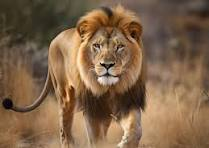
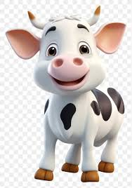

ZIGZAG ALIGNMENT

The legs and neck are extremely long. The giraffe has a short body, a tufted tail, a short mane, and short
skin-covered horns. The back slopes downward to the hindquarters. The coat is pale buff, with reddish
brown spots.Their legs alone are taller than many humans—about 6 feet.

The lion is a wild terrestrial animal called the king of the forest. The lion is a strong animal with a
strong body, a big head, a majestic mane, and two fierce eyes. Lions are predatory animals and eat only
after hunting. They have strong claws and sharp teeth, which help them hunt their prey

Elephants are the largest land mammals on earth and have distinctly massive bodies, large ears, and long
trunks.
They use their trunks to pick up objects, trumpet warnings, greet other elephants, or suck up water for
drinking
or bathing, among other uses.Elephant are grayish to brown colour.

Cow's milk is a rich source of high quality protein, containing all essential amino acids. Whole milk is also
a
rich source of energy in the form of saturated fat, which can prevent muscle mass from being used for
energy.
Low fat milk can provide the benefits of milk while supplying less fat.